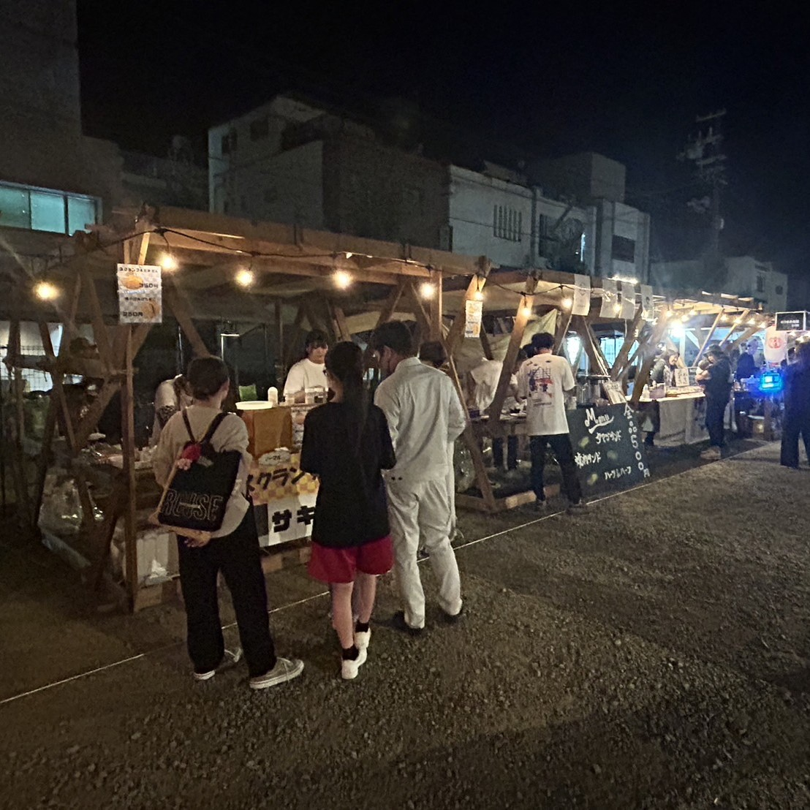

文化部活動記録
■校外での活動
- 2024-12-15
機械工作部 News&Topics
「第１６回きのくに高校生ロボットコンテスト」で受賞
高等学校の部 第３位 山口善志亜(機3) 中川嘉月(創2)
まいど１号大賞 塚田亮成(創3) 佐藤哉汰(機2)

- 2024-11/9～10
建築技術クラブ
第24回高校生ものづくりコンテスト全国大会(会場:山形県立山形職業能力開発専門校)
木材加工部門 敢闘賞 本城花陽(建3) - 2024-10-26
ＷＧＭ(WakoGrooveMusic) News&Topics
「第18回商業教育フェスタ」－高校生パフォーマンスショーで演奏
- 2024-10-12･13
建築技術クラブ News&Topics
「第76回わかやま商工まつり」学生出展ブースでこども向けイベント開催
◆◆新聞紙で出来る!?君たちだけの秘密基地!!!◆◆
- 2024-10-11～13
建築技術クラブ News&Topics
「CRAFTS MAN'24」イベント仮設ブース製作
 - 2024-09-28
化学技術クラブ News&Topics
和歌浦漁業協同組合と共同で養殖したアサリの収獲作業
- 2024-09-07
建築技術クラブ News&Topics
全国高校生ものづくりコンテスト木材加工部門近畿大会(会場:大阪府立都島工業高等学校)
木材加工部門 最優秀賞(1位) 本城花陽(建築３) ※近畿代表全国大会出場
優良賞(4～6位相当) 西岡和馬(建築３) - 2024-08-24
土木クラブ News&Topics
第23回コンクリートカヌー競技大会(会場:兵庫県立円山川公苑)
アイデア８位、製作１優勝、競漕５位、総合７位 [出場数:11チーム]

- 2024-08-21
土木クラブ
第24回高校生ものづくりコンテスト測量部門近畿大会(会場:全但バス但馬ドーム)
測量部門６位 [出場数:９チーム] - 2024-08-07
ダンス部
第17回日本高校ダンス部選手権(会場：グランキューブ大阪)出場


- 2024-08-04･05
囲碁・将棋部
第48回全国高等学校総合文化祭(ぎふ総文2024)(会場:飛騨･世界生活文化ｾﾝﾀｰ)
４８チーム中４３位（２勝４敗） - 2024-08-01
建築技術クラブ News&Topics
宇賀部神社からの依頼で風鈴まつり屋台を設計製作
- 2024-07-23
囲碁・将棋部
第48回文部科学大臣杯全国高等学校囲碁選手権大会全国大会(会場:日本棋院東京本院)
予選敗退 - 2024-07-16
ダンス部
第106回全国高校野球(県大会)応援
- 2024-07-15
電波研究部
第35回全国高等学校アマチュア無線コンテスト
高校マルチオペレータ 21MHz部門 準優勝
高校マルチオペレータ 50MHz部門 優勝
高校シングルオペレータ 7MHz部門 奨励賞
高校シングルオペレータ 144MHz部門 奨励賞
高校シングルオペレータ 430MHz部門 第三位 - 2024-06-01
ＷＧＭ(WakoGrooveMusic)
第7回 わかちかライブ－With笠田高校ギター部 (和歌山駅地下広場14:00～17:00)
- 2024-04-07
電波研究部
第36回和歌山コンテスト
和歌山県内マルチオペマルチバンド電信・電話の部第１位 - 2023-11-12
メカトロ技術部
第16回 県高校生ロボット競技会 (主催：県高教研工業部会 会場：和歌山工業高校体育館)
優勝：島田和輝(電2甲),森下竜雅(創1)
- 2024-04-30
ＷＧＭ(WakoGrooveMusic) 中庭ライブ(2ﾁｰﾑ：2曲)